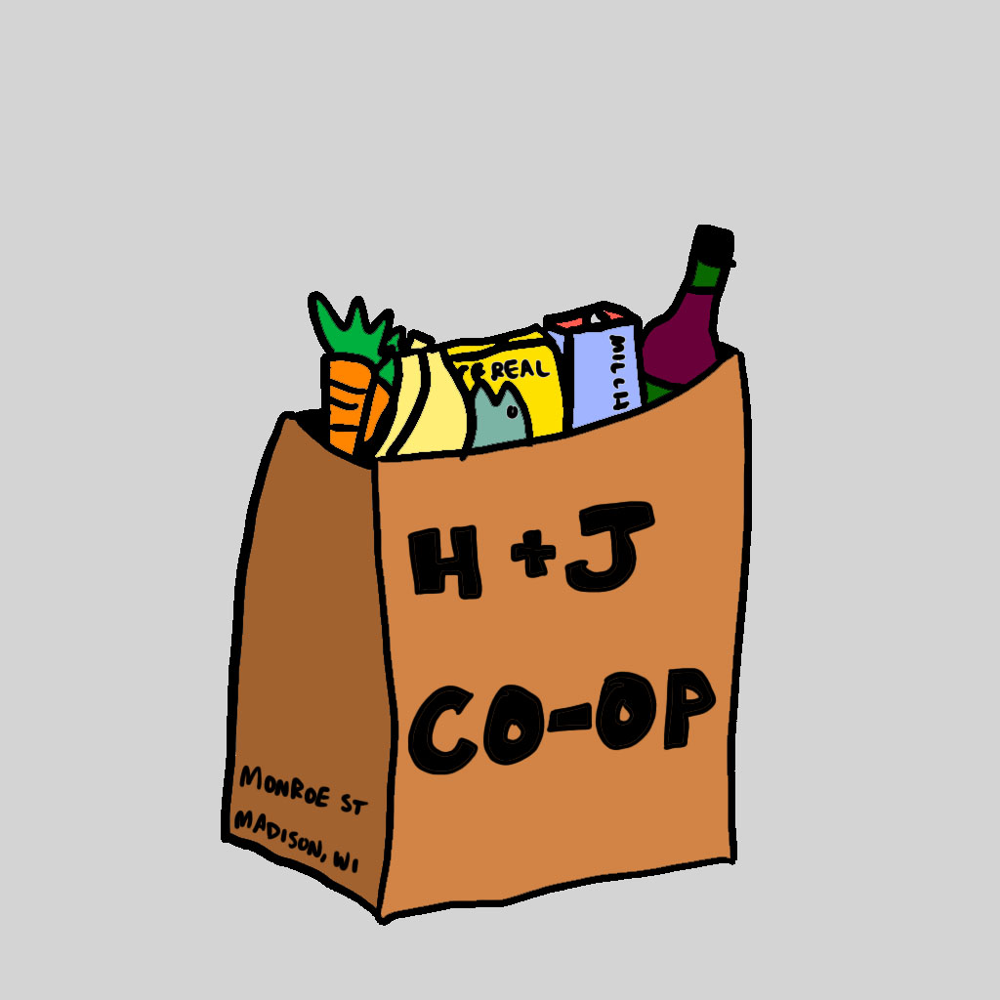

Lebensmittel is a simple grocery list app for iOS. It is open source and free to use. The app is developed by Jai Sinha and will be available to download on the App Store. Source code is available on GitHub. See the privacy policy for more information about data collection and usage.
Send me an email at jaisinha219@gmail.com for support.